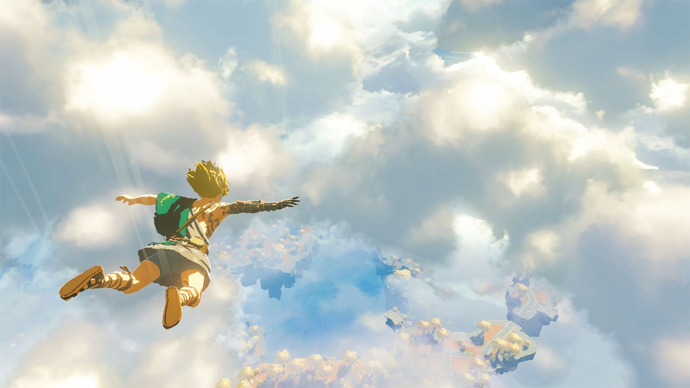

Breath of the Wild 2 nuevo tráiler
Todavía habrá que esperar para poder jugar a la secuela de The Legend of Zelda: Breath of the Wild devido a que aun no tiene fecha de lanzamiento confirmada, a pesar de que Nintendo planea lanzarlo este 2022. Pero hoy tenemos nuevas noticias, ya que hemos recibido un nuevo tráiler. Hacía años que se había confirmado que el que es por muchos el mejor juego de Nintendo Switch tendría una secuela, pero el único tráiler mostrado era bastante escueto y dejaba mucho a la imaginación, pero ahora, con este nuevo tráiler, ya conocemos algo más de esta nueva entrega, incluido el lugar de altos vuelos en el que se desarrollará.
Así es el nuevo tráiler de The Legend of Zelda: Breath of the Wild 2
Era uno de los más pedidos por todos, y la Gran N nos ofrece un tráiler muy revelador sobre cómo va a ser la secuela de The Legend of Zelda: Breath of the Wild (la cual no cuenta todavía con un nombre oficial). Así, durante el algo más de minuto y medio de duración que tiene, podemos ver que esta nueva aventura de Link y Zelda se desarrollará en el cielo de Hyrule, pero también observamos que nuestro protagonista contará con nuevas habilidades, como con la posibilidad de poder transformar su cuerpo en líquido (y la de también controlar varios otros elementos naturales). Además, también vemos algún que otro nuevo enemigo que rondará por estos mapas, e incluso tiene cabida esa nueva maldad que hará que tengamos que recorrer este nuevo entorno. ¿Qué ocurrirá finalmente con la princesa Zelda?
